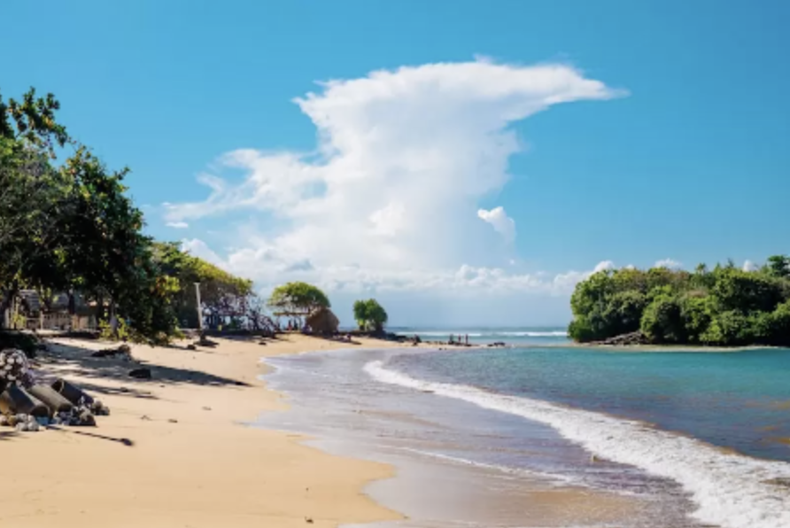
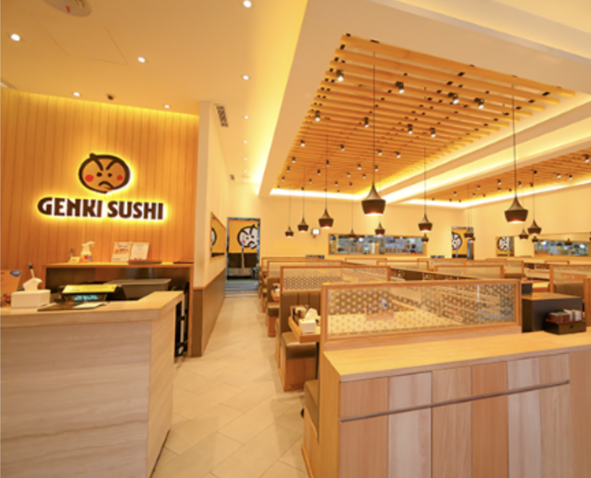

Bienvenue dans mon carnet de voyages en ligne ! Ici, je partage mes aventures captivantes à travers le globe.
Mes Destinations Préférées
- La Plage de Bali, Indonésie
- Les Rues animées de Tokyo, Japon
- Les Paysages Epoustouflants des Alpes Suisses

Souvenirs de Mes Voyages
Mon restaurant préféré
Savourer les sushis savoureux de chez Genkisushi.
La plus belle balade
Je recommande ce site pour touver des idées : 6 randonnées à faire dans les Alpes Suisses
